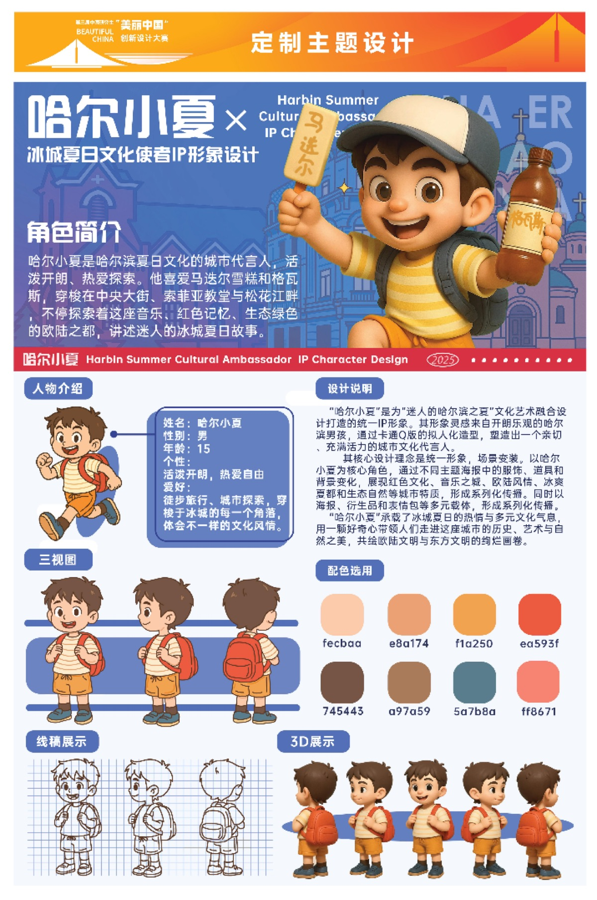
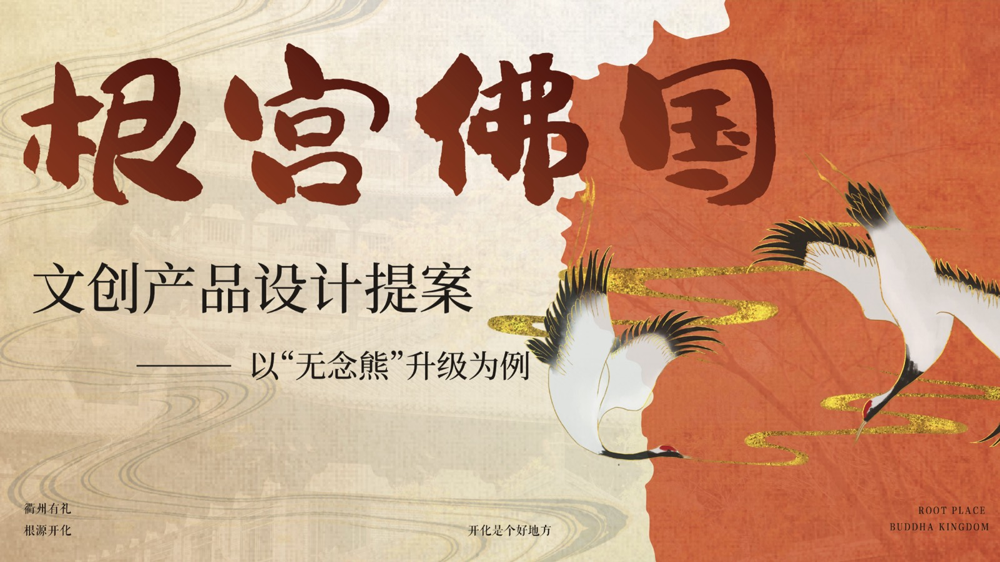
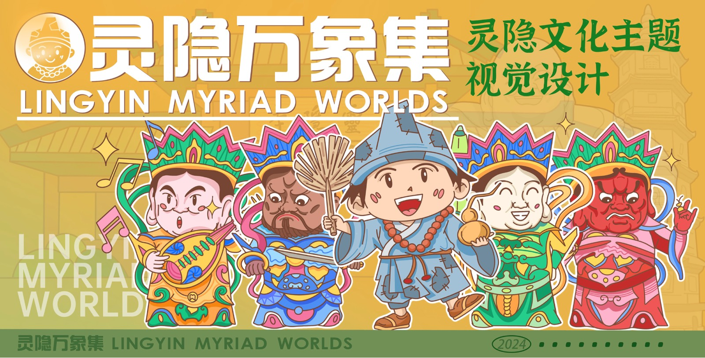
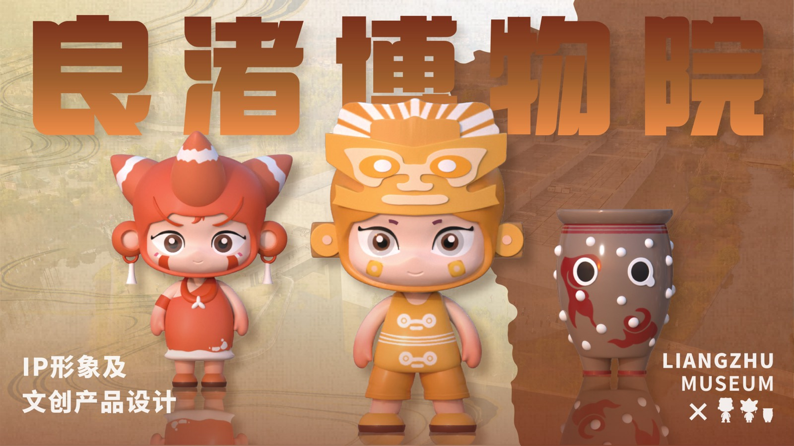

01 / 2025哈尔滨夏日
哈尔滨夏日
文化使者 IP
围绕哈尔滨夏日城市文化，运用 AIGC 辅助文化元素提炼与 IP 视觉设计，完成形象优化与应用延展。
第三届中国研究生“美丽中国”创新设计大赛 · 全国二等奖

VISUAL / IP / CULTURAL CREATIVE
从城市文化、博物馆文创到景区 IP，用视觉系统让故事拥有鲜明而完整的形状。
围绕哈尔滨夏日城市文化，运用 AIGC 辅助文化元素提炼与 IP 视觉设计，完成形象优化与应用延展。
第三届中国研究生“美丽中国”创新设计大赛 · 全国二等奖

围绕开化县根宫佛国景区进行调研、创意策划与视觉方案设计，探索传统文化在当代文创中的亲和表达。
全国会展策划创意大赛 · 全国三等奖
浙江省会展策划创意大赛 · 省级一等奖

以灵隐文化为叙事起点，将典型形象、建筑语汇与鲜活色彩融合为更具亲近感的主题视觉表达。
文化主题视觉设计

以良渚文化与博物院叙事为基础，探索 IP 角色、产品形态与场景应用之间的联动关系。
IP 形象及文创产品设计
